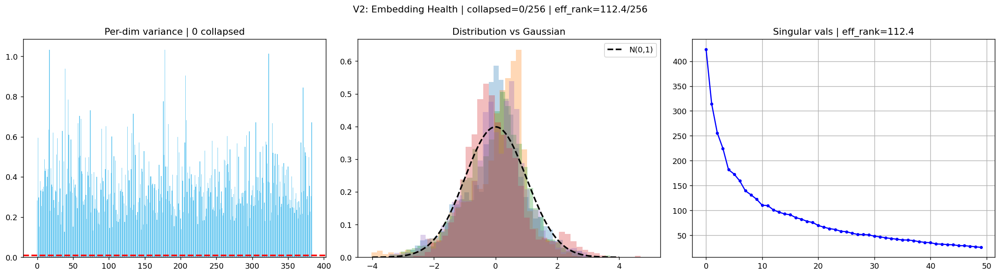
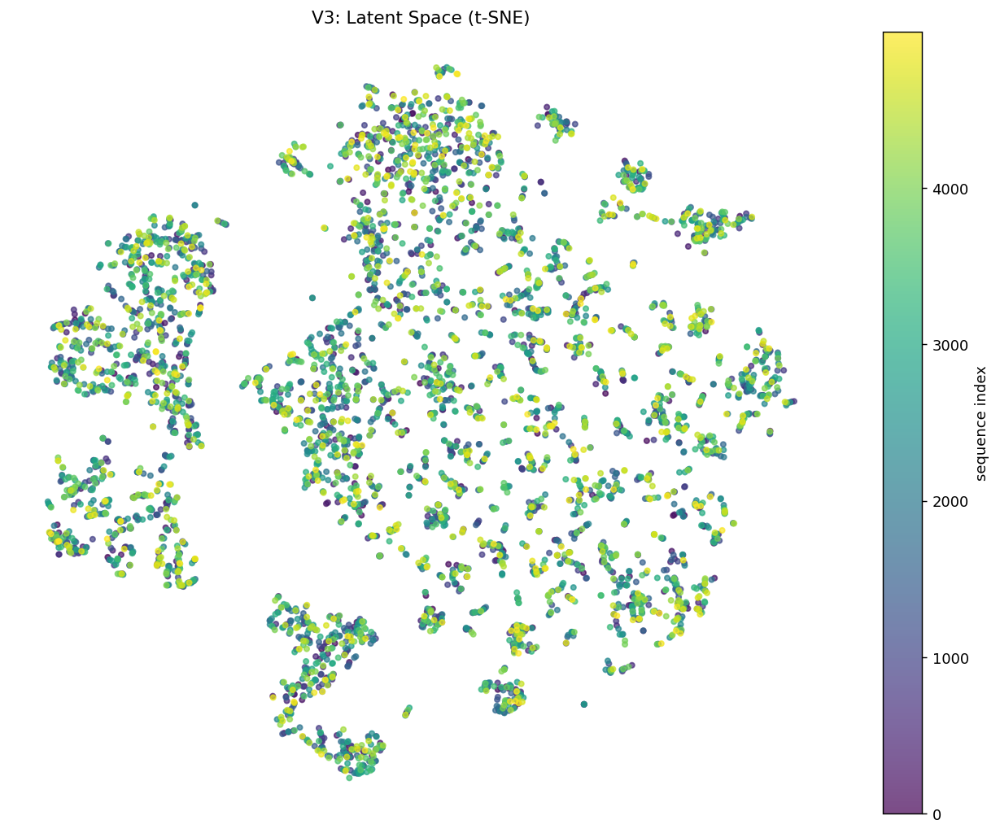
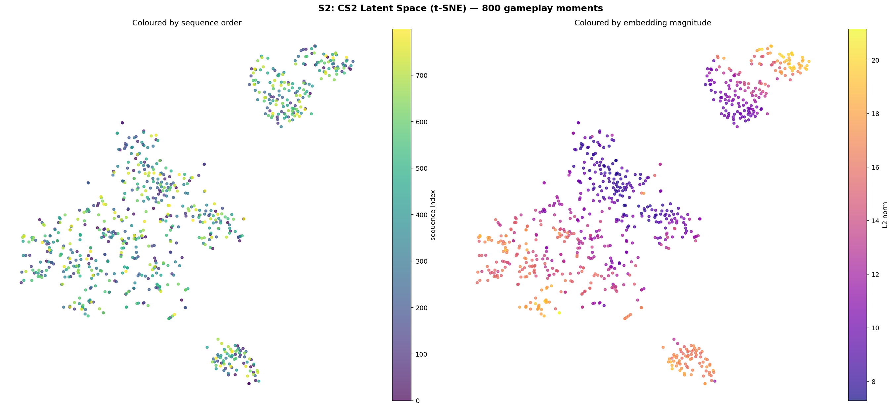
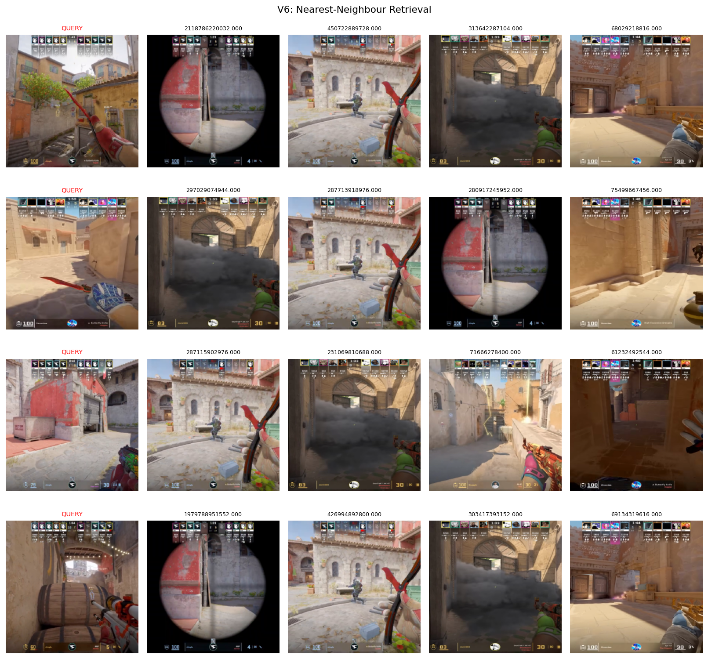
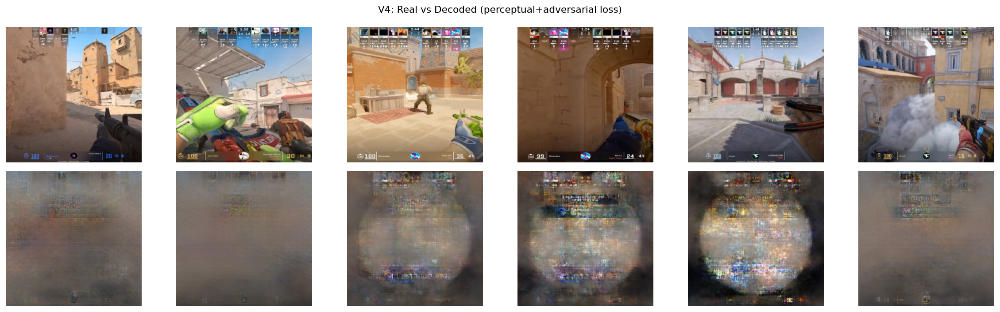
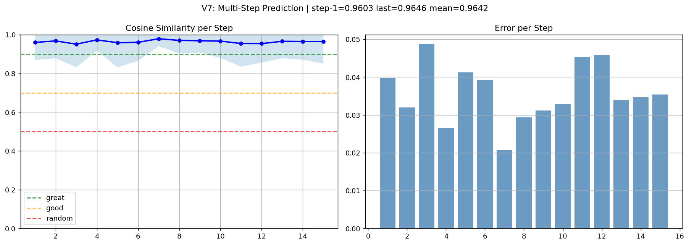
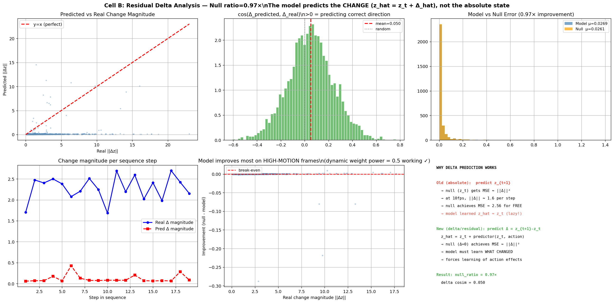
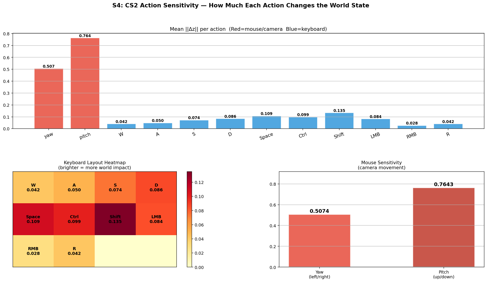
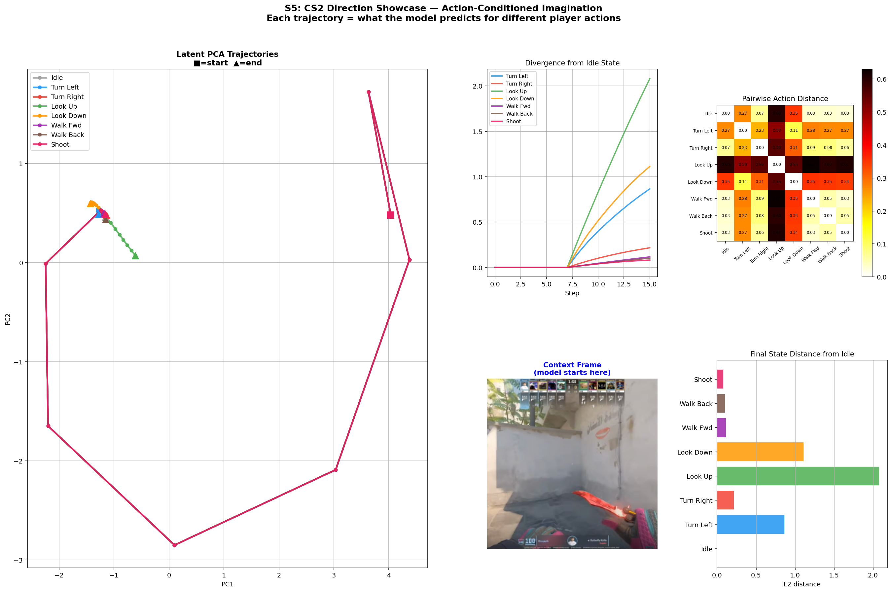

Joint-Embedding Predictive Architectures (JEPAs), introduced by LeCun (2022), learn world models by predicting representations of future observations in a compact latent space rather than reconstructing raw pixels. The central difficulty is representation collapse: a model can trivially satisfy the prediction objective by mapping all observations to a constant embedding.
LeWorldModel (Maes et al., 2026) is the first JEPA that trains stably end-to-end from raw pixels using only two loss terms: (i) a next-embedding prediction MSE and (ii) the Sketched Isotropic Gaussian Regulariser (SIGReg). SIGReg exploits the Cramér–Wold theorem: a high-dimensional distribution is Gaussian if and only if all of its one-dimensional projections are Gaussian. It applies the Epps–Pulley normality test to 1024 random projections per step. The gradient is provably bounded at |∂L/∂zi| ≤ 4σ²/N, ensuring stable training. Only one hyperparameter (λ) requires tuning.
Counter-Strike 2 is an attractive testbed. Camera movement (mouse) and movement keys produce visually distinct dynamics; scoping through a rifle sight creates a distinctive circular frame that a good encoder should cluster separately. At 10 fps these dynamics are challenging: consecutive frames are nearly identical, which exposes the lazy-solution failure mode that JEPA architectures are prone to.
DeltaTok (Kerssies et al., 2026) encodes the difference zt+1−zt as a single token using a frozen vision foundation model encoder. This design is incompatible with LeWM, which trains the encoder jointly from scratch (freezing an untrained encoder prevents SIGReg from enforcing the Gaussian constraint). We incorporate the core insight — predicting the change in latent state is more informative than predicting the absolute next state — as a residual connection: z_hat = z_t + predictor(z_t, action). This eliminates the degenerate solution of predicting zt as zt+1 without breaking end-to-end differentiability or SIGReg compatibility.
| Dim. | Action | Type | Derivation from video | Temporal aggregation |
|---|---|---|---|---|
| 0 | Yaw (camera left/right) | Continuous | Median optical flow dx | Sum (velocity) |
| 1 | Pitch (camera up/down) | Continuous | Median optical flow dy | Sum (velocity) |
| 2 | W (forward) | Binary | Flow divergence + magnitude | Mean (state) |
| 3 | A (strafe left) | Binary | Left–right asymmetry | Mean (state) |
| 4 | S (backward) | Binary | Negative divergence | Mean (state) |
| 5 | D (strafe right) | Binary | Left–right asymmetry | Mean (state) |
| 6 | Space (jump) | Binary | Upward flow (dy < 0) | Mean (state) |
| 7 | Ctrl (crouch) | Binary | Downward flow (dy > 0) | Mean (state) |
| 8 | Shift (walk slow) | Binary | Fast forward without divergence | Mean (state) |
| 9 | LMB (primary fire) | Binary | Flash score (brightness gain) | Mean (state) |
| 10 | RMB (aim down sights) | Binary | Scope score (dark corners, bright centre) | Mean (state) |
| 11 | R (reload) | Binary | Insufficient visual signal — always 0 | — |
When frames are sampled with temporal gap g > 1, mouse dimensions are summed (they represent accumulated velocity) and key dimensions are averaged (they represent the proportion of time a key was held). Using any other aggregation produces systematically incorrect action representations.
We downloaded 16 CS2 first-person gameplay clips from YouTube (720p, MP4, approximately 30 minutes each, ~8 GB per clip) using yt-dlp. No labels, annotations, or game-engine access were used at any stage.
yt-dlp -f "bestvideo[height<=720][ext=mp4]" URL -> 16 x .mp4 (~8 GB each)
|
v
ffmpeg: 10 fps, square-crop, resize to 224x224, RGB24
-> *_frames.npy (uint8, shape (N, 224, 224, 3), ~3.2 GB per clip)
|
v
DIS Optical Flow (cv2.DISOpticalFlow_create, PRESET_FAST)
5-10x faster than Farneback; better for rapid CS2 camera movement
Median flow dx/dy -> yaw/pitch
Sobel divergence -> W (forward) / S (backward)
Left/right asymmetry -> A / D strafe
Vertical flow -> Space (jump) / Ctrl (crouch)
Flash score -> LMB (fire)
Scope score -> RMB (aim down sights)
-> *_actions.npy (float32, shape (N, 12), ~200 MB per clip)
|
v
ClipStore: auto RAM/mmap selection
If all clips fit in 0.8 x ram_budget_gb: load into RAM (zero disk I/O during training)
Otherwise: mmap with lazy loading per clip
|
v
CS2SequenceDataset
T = 20 frames per sequence
Temporal gap g in [1, 4] during training (jitter forces harder prediction targets)
g = 2 at evaluation (deterministic)
aggregate_actions: mouse dims SUMMED, key dims AVERAGED over gap
Augmentation: horizontal flip with negated yaw and swapped A/D keys
With the naive implementation (np.load(..., mmap_mode='r') in __getitem__), GPU utilisation was approximately 8%. Each CS2 clip is ~3.2 GB; at 10 fps the OS page cache cannot retain the full array between epochs. Each batch of 256 sequences requires approximately 1.8 GB of page-fault disk reads (~260 ms on NVMe SSD), while the H100 forward+backward pass completes in ~20 ms, leaving the GPU idle 92% of the time.
The fix is to load all arrays into RAM at startup. On the H100 Lightning.ai node (192 GB RAM), 16 clips × 3.2 GB = 51 GB. With RAM storage and the uint8→float16 conversion deferred to a GPU collate function, utilisation reaches approximately 95%.
| Hyperparameter | Value | Notes |
|---|---|---|
| Batch size | 256 | Auto-tuned to 75% VRAM at startup |
| Sequence length | 20 frames | 2 seconds of gameplay at 10 fps |
| Temporal jitter | gap in [1, 4] | Harder targets; mitigates consecutive-frame similarity |
| SIGReg weight λ | 0.025 | Warmup over 2000 steps from 0 |
| SIGReg on predictor ε | 0.005 | Prevents predictor drift in long rollouts |
| Dynamic weight power | 0.5 | Weight loss by ||Δz||0.5; up-weights high-motion frames |
| Learning rate | 1e-4 | Cosine decay, 2-epoch linear warmup |
| Gradient clip | 2.0 | Prevents SIGReg gradient spikes early in training |
| Optimiser | AdamW, fused | weight_decay=1e-3; single CUDA kernel on H100 |
| Precision | bfloat16 | H100 tensor cores; GradScaler disabled for bf16 |
| torch.compile | reduce-overhead | Approximately 15% throughput improvement |
| JEPA epochs | 40 | ~700 steps/epoch = 28,000 gradient steps |
| Decoder epochs | 80 | VGG perceptual + PatchGAN; 25 epochs produces blurry output |
| Total wall time | ~3 hours | H100 SXM5 80 GB, Lightning.ai |
python train.py --stage all --budget-hours 3.4
The budget system reserves 50 minutes for decoder training and 20 minutes for evaluation before the deadline, allocating the remainder to JEPA training. A deadline check inside each training loop ensures clean checkpoint saving before termination.









At 10 fps, the mean L2 distance ||zt+1 − zt|| in latent space is approximately 1.6. Without residual prediction, minimising MSE produces the degenerate solution of predicting zt as the next state, which achieves MSE ≈ 2.56 with no learning. The formulation z_hat = z_t + predictor(z_t, action) changes the null predictor to Δ=0, which achieves the same MSE as the unconditional mean frame-to-frame distance. Dynamic loss weighting (wt = ||Δz||0.5) further emphasises high-motion frames (flick shots, peek actions) over near-static frames, concentrating gradient signal on the dynamics the model most needs to learn.
The Cross-Entropy Method planner finds a horizon-H action sequence that minimises ||zH − zgoal||2 by iteratively refitting a Gaussian sampling distribution to the elite candidates:
for iteration in range(N_ITERS):
candidates = mu + std * randn(N_SAMPLES, HORIZON, ACTION_DIM)
z_rollout = model.rollout(z_init, candidates) # shape: (N, H, D)
costs = ||z_rollout[:, -1] - z_goal||^2 # shape: (N,)
elites = candidates[argsort(costs)[:N_ELITES]]
mu = elites.mean(0)
std = elites.std(0).clamp(min=0.05) * 0.95
On an H100, 20 CEM iterations with 512 candidates at horizon 15 complete in approximately 80 ms (12 fps). On CPU this takes approximately 2.1 seconds per planning step. The planner is used entirely in latent space; no decoder is needed for planning.
mss (~5 ms), encode the current frame to zobs (~18 ms on CPU), run CEM to find the best action, then execute via pyautogui.moveRel and key events. The full per-step loop is approximately 2.2 s on CPU (viable for demonstration at 0.5 fps) or 110 ms on GPU (real-time at 9 fps). CS2 must be in windowed mode; use a local bot server to avoid VAC anti-cheat.
| Issue | Severity | Root cause | Remediation |
|---|---|---|---|
| Null ratio 1.02× | Moderate | 10 fps consecutive frames are ~99% similar; 40 epochs insufficient for strong dynamics | Continue to 100–200 epochs; increase temporal jitter range to [2, 6] |
| Decoder blurriness | Visual only | Small 256-dim bottleneck; 80 decoder epochs on a convolutional upsampler | Larger decoder architecture; diffusion-based decoder; more training epochs |
| Pseudo-actions only | Moderate | Optical flow is an indirect proxy for ground-truth keyboard/mouse state | Record gameplay with a tool that simultaneously captures screen and input events |
| Temporal straightening negative (−0.255) | Moderate | Partial training; the paper reports positive values at full training | More training epochs; the paper achieved +0.112 at 10k/30k steps on robotics data |
| Reload (R) always zero | Minor | No reliable visual discriminator for reload in optical flow | Audio analysis of reload sound; screen-region pixel statistics |
pip install torch torchvision transformers einops \
opencv-contrib-python-headless scikit-learn \
yt-dlp tqdm
Add 10–20 CS2 first-person YouTube URLs to the CS2_YT_URLS list at the top of train.py. Clips from competitive play (20–30 minutes, not highlights reels) produce the most diverse training data. Each clip contributes approximately 18,000 frames at 10 fps.
python train.py --stage all --budget-hours 3.4 # full run python train.py --stage smoke # 30-second forward-pass check python train.py --stage eval # evaluation only (needs checkpoint) python train.py --stage decoder # decoder only (needs JEPA checkpoint)
python cs2_showcase_tests.py # runs all 8 analysis cells, saves plots to run_dir/showcase/
python test_train.py -v CoreTests # fast, no GPU required python test_train.py -v IntegrationTests # ~5 minutes, validates training logic python test_train.py -v DecoderTests # validates decoder components